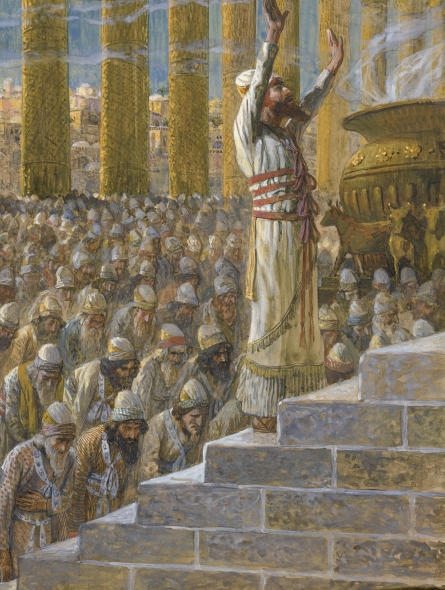

2 Chronicles 7 — The Mister Translation

2 Chronicles 7:1–3. Tissot drew the dedication from 1 Kings 8:13, and this is a small study, with the blue lines of a draughtsman’s layout still across it. It has Solomon with his arms raised and a crowd bowing, which is what verse 3 describes; it has no fire and no cloud, and the chapter’s fire is not in the picture.

Translator's Notes — verse by verse
⭐ The fire, which Kings does not have. The chapter opens where Solomon’s long prayer ends. “And the fire came down” stands in one verse of the Hebrew Bible, this one. The parallel account of the dedication in 1 Kings 8:10–11 (now on these pages) has the cloud filling the house and has no fire at all; the fire that consumes a burnt offering on an altar answered Aaron’s first sacrifice instead (Leviticus 9:24, now on these pages). So Chronicles tells the dedication with both of the earlier signs together. The KJV has “the fire came down from heaven, and consumed the burnt offering and the sacrifices”, the NWT 1984 “the fire itself came down from the heavens and proceeded to consume the burnt offering”, the NIV “fire came down from heaven and consumed the burnt offering and the sacrifices” and the TLB “fire flashed down from heaven and burned up the sacrifices”. The Douay calls the offerings “holocausts and the victims”, and for the glory it has “the majesty of the Lord filled the house”, where the Geneva has “the glory of the Lord”.
⭐ “The priests could not enter”. “And the priests could not enter” stands in this one verse. Kings says something near it, “the priests could not stand to minister because of the cloud” (1 Kings 8:11), and the pattern is older: at the tent, “Moses was not able to enter the tent of meeting, because the cloud had settled on it, and the glory of Jehovah filled the tabernacle” (Exodus 40:35, now on these pages). In each of the three the glory fills the house and the one who serves is shut out. Here the verb is lavo, to come in, and the glory is kavod (dictionary). The ASV has “the priests could not enter into the house of Jehovah”, the NIV “The priests could not enter the temple of the Lord” and the NWT 1984 “the priests were unable to enter into the house of Jehovah”. The TLB puts the shutting-out into the first sentence, “so that the priests couldn’t enter!”.
⭐ Bowing, and the pavement. “They bowed, faces to the ground” stands in this one verse, and the Hebrew then names the floor, ritzpah, the pavement; the same consonants are a paved floor in Ezekiel 40:17 and a hot stone in Isaiah 6:6 (Isaiah 6:6, now on these pages; Ezekiel not yet). “Faces to the ground”, apayim artzah, is an old gesture of greeting and homage (the pair stands in nine verses of the Hebrew Bible, from Lot at Sodom to the people hearing the law in Nehemiah 8:6, of which this is one). The KJV has “they bowed themselves with their faces to the ground upon the pavement”, the NIV “they knelt on the pavement with their faces to the ground”, the TLB “they fell flat on the pavement” and the Douay “falling down with their faces to the ground, upon the stone pavement”. For the watching, the ASV has “looked on” and the NWT 1984 “were spectators”.
⭐ The refrain. “For he is good, for his steadfast love is forever”: the whole refrain stands in nine verses of the Hebrew Bible. They are 1 Chronicles 16:34, this verse, 2 Chronicles 5:13, Ezra 3:11 and Psalms 106:1, 107:1, 118:1, 118:29 and 136:1, of which only Psalm 118 is translated here yet (Psalm 118:1); and its second half, “for his steadfast love is forever”, stands in forty-one verses. Chronicles is where the refrain is put into the mouths of the singers on each great day. This translation prints “steadfast love” for chesed (dictionary). The shelf has it five ways: the KJV “his mercy endureth for ever” and the Geneva “his mercy lasteth forever”; the ASV “his lovingkindness endureth for ever”; the NIV “his love endures forever”; the NWT 1984 “his loving-kindness is to time indefinite”; and the TLB “He is always so loving and kind”.
⭐ The same numbers as Kings. “Cattle, twenty-two thousand, and sheep, a hundred and twenty thousand”: these are the figures of 1 Kings 8:63 (now on these pages), unchanged. Then “and they dedicated the house” stands in two verses, 1 Kings 8:63 and this one, with chanakh, to dedicate, the verb under Hanukkah. The KJV has “So the king and all the people dedicated the house of God”, the NWT 1984 “Thus the king and all the people inaugurated the house of the [true] God” and the Douay “the king and all the people dedicated the house of God”. The Douay has “twenty-two thousand oxen, and one hundred and twenty thousand rams”, where the NWT 1984 has “twenty-two thousand cattle and a hundred and twenty thousand sheep”.
⭐ A written and a read trumpet. In verse 6 the Hebrew prints a word twice, “machatzetzerim machatzerim”: the first is how the text was written, with an extra tsade, and the second is how it was read aloud, without it. This is a ketiv/qere pair, and the Hebrew column keeps both. The written form stands in five verses of the Hebrew Bible: 1 Chronicles 15:24, 2 Chronicles 5:13, this verse, 13:14 and 29:28, none of the others translated here yet. The meaning is not in question: the priests are blowing trumpets, chatzotzrah. The KJV has “the priests sounded trumpets before them”, the NWT 1984 “the priests were loudly sounding the trumpets in front of them” and the Douay “the priests sounded with trumpets before them”. The NIV puts them “opposite the Levites”, which the Hebrew negdam, “opposite them”, also allows. The ASV puts the thanks into a parenthesis, “(for his lovingkindness endureth for ever)”, and the TLB makes the refrain the title of a song, “His Loving-Kindness Is Forever”.
⚠ “Could not hold”. Verse 7 gives the reason Solomon made the middle of the court holy: “could not hold” stands in this one verse, said of the bronze altar that the burnt offering, the grain offering and the fat pieces were too much for. Kings says it more briefly: the bronze altar before Jehovah “was too small to hold” them (1 Kings 8:64, now on these pages). The KJV has “was not able to receive the burnt offerings”, the ASV “was not able to receive”, the NIV “could not hold the burnt offerings”, the NWT 1984 “was itself not able to contain the burnt offering” and the Douay “could not hold the holocausts”. The TLB has “there were too many sacrifices for the bronze altar to accommodate”.
⭐ From Hamath to the Wadi of Egypt. The assembly was “very great”, and it came “from the entrance of Hamath to the Wadi of Egypt”, the northern and southern edge of the land. The whole phrase stands in two verses of the Hebrew Bible, 1 Kings 8:65 (now on these pages) and this one. The KJV has “from the entering in of Hamath”, the Douay “from the entrance of Emath to the torrent of Egypt”, the NWT 1984 “from the entering in of Hamath down to the torrent valley of Egypt”.
⭐ Seven and seven, and the twenty-third. Verse 9 does its own arithmetic: on the eighth day a solemn assembly, atzeret, “for the dedication of the altar they had held seven days, and the festival seven days”. The eighth-day assembly is the one the law gives to the festival of booths (Leviticus 23:36, now on these pages). If the dedication came first, as in 1 Kings 8:65, the days run from the eighth to the fourteenth of the seventh month, then from the fifteenth to the twenty-first, with the assembly on the twenty-second, and verse 10 has the people sent home on the twenty-third. Kings says “on the eighth day” (1 Kings 8:66) and gives no date, so Chronicles supplies the date and Kings the count. The KJV has “on the three and twentieth day of the seventh month”, the NWT 1984 “on the twenty-third day of the seventh month” and the Douay “on the three and twentieth day of the seventh month”; the TLB turns it into a date on our calendar, “on October 7”. “To their tents”, which stands in two verses, here and 1 Kings 8:66, is the old word for home: the KJV has “into their tents”, the Douay “to their dwellings”, the NWT 1984 “to their homes” and the NIV “to their homes”.
⭐ “He made it succeed”. Verse 11 closes the building: Solomon “finished the house of Jehovah and the house of the king”, and everything that came into his heart for both, hitzliach, “he made to succeed” (dictionary). The KJV has “he prosperously effected”, where the NWT 1984 has “he proved successful”. Nothing in the verse says what comes next, and the next verse does.
⭐ By night, and a house of sacrifice. Kings says only that Jehovah appeared to Solomon “a second time, as he had appeared to him at Gibeon” (1 Kings 9:2, now on these pages); Chronicles gives the hour, ballaylah, “by night”, and the first words of the answer: “I have heard your prayer.” The place is chosen “as a house of sacrifice”, beit zavach (dictionary); the pair stands in one verse once the hits are read, this one. The KJV has “an house of sacrifice”, the NIV “a temple for sacrifices”, the NWT 1984 “a house of sacrifice” and the TLB “the place where I want you to sacrifice to me”. The Douay has “a house of sacrifice”.
⭐ Three ifs. Verse 13 is built of three clauses that echo Solomon’s prayer in the chapter before: “If I shut up the heavens so that there is no rain”, “if I command the locust to devour the land”, “if I send pestilence among my people”. “I shut up the heavens” stands in this one verse; the prayer had it as “when the heavens are shut up and there is no rain” (1 Kings 8:35, now on these pages), and the other two are among the troubles listed there, locust and pestilence (1 Kings 8:37). The first two begin with hen and the third with im, both meaning “if”. The locust is chagav, a grasshopper or locust (dictionary), and the pestilence dever (dictionary). The KJV has “the locusts”, the NIV “locusts”, the Douay “the locust”, the NWT 1984 “the grasshoppers” and the Geneva “the grasshopper”; the TLB has “the locust swarms”. For the third, the NIV has “a plague” and the TLB “an epidemic”, where the KJV, the Geneva, the Douay and the NWT 1984 each have “pestilence”.
⭐ One sentence, seven verbs. The verse is the end of the thing begun in verse 13 (“if I shut up the heavens … and my people …”), and the Hebrew carries it in a single run: four verbs for the people, “humble themselves”, “pray”, “seek my face”, “turn”, and three for God, “I will hear”, “I will forgive”, “I will heal”. The English versions print “then” where the sentence turns from the people to God; the Hebrew has only one small word for the hinge, va’ani, “and I”.
⭐ “Humble themselves”. Yikkane’u is the verb kana (dictionary). The form stands in seven verses of the Hebrew Bible: in two of them people humble themselves, this one and 2 Chronicles 12:6, where the princes of Israel and the king do it before the invasion of Shishak, and in the other five a people is brought low, “subdued” (Judges 11:33, 1 Samuel 7:13, 1 Chronicles 20:4, 2 Chronicles 13:18 and Psalm 106:42). So the verb is the same one that names defeat; here the people do to themselves what an enemy would have done to them. The KJV has “shall humble themselves”, the ASV “shall humble themselves”, the NIV “will humble themselves”, the NWT 1984 “humble themselves”, the Geneva “do humble themselves” and the TLB “will humble themselves”. The Douay, which translates the Latin, has “being converted, shall make supplication to me”.
⭐ “On whom my name is called”. “Whom my name is called upon” stands in two verses, this one and Amos 9:12, and the idea of a name called over a people is that of ownership, as a name is called over a house or a child. The KJV has “which are called by my name”, the ASV “who are called by my name”, the NIV “who are called by my name”, the NWT 1984 “upon whom my name has been called”, the Geneva “among whom my Name is called upon” and the Douay “upon whom my name is called”. The TLB has “if my people will humble themselves and pray”, and leaves the clause out.
⭐ “Seek my face”, “turn”. “And seek my face” in this form stands in this one verse; its near relative uvaqshu fanai is in Hosea 5:15. Panim is face, presence (dictionary). The KJV has “seek my face”, the ASV “seek my face”, the NIV “seek my face”, the NWT 1984 “seek my face”, the Geneva “seek my presence”, the Douay “seek out my face” and the TLB “search for me”. The turning is shuv (dictionary) and the road is middarkheihem hara’im, “from their evil ways”; this exact phrase stands in this one verse. The KJV has “turn from their wicked ways”, the NWT 1984 “turn back from their bad ways” and the Douay “do penance for their most wicked ways”.
⭐ Hear, forgive, heal. “And I will forgive their sin” stands in this one verse, with salach (dictionary), and then, “and I will heal their land” also in this one verse, with rapha (dictionary). What is healed is the land, artzam, “their land”, and the land is the one the next verses make the stake of the warning: “I will pluck them up from my ground” (verse 20). Seven versions print “heal their land”: the KJV “will heal their land”, the ASV “will heal their land”, the NIV “will heal their land”, the NWT 1984 “I shall heal their land”, the Geneva “will heal their land”, the Douay “will heal their land” and the TLB “heal their land”. For the sin, the Geneva has “be merciful to their sin”, the TLB “forgive their sins” and the Douay “will forgive their sins”. The sentence belongs to the night appearance of verse 12, said to Solomon about his people and the house he has just finished; its “land” is the land that verse 20 has Jehovah giving and taking back.
⭐ Solomon’s request, answered in his own words. At the end of his prayer Solomon had asked, “let your eyes be open and your ears attentive to the prayer of this place” (2 Chronicles 6:40), with the pair “your ears, attentive” in two verses of the Hebrew Bible, that one and Psalm 130:2 (now on these pages). Verse 15 gives the same words back with “my” for “your”: “my eyes will be open” stands in this one verse. The KJV has “mine ears attent”, the ASV “mine ears attent”, the Geneva “mine ears attent”, the NIV “my ears attentive” and the NWT 1984 “my ears attentive”. The Douay has “the prayer of him that shall pray in this place”, which makes the prayer a person’s, and the TLB “I will listen, wide awake, to every prayer made in this place”.
⭐ The name, the eyes and the heart. “That my name may be there forever” has its Kings parallel in 1 Kings 9:3 (now on these pages), and “and my eyes and my heart will be there” stands in two verses, that one and this. The KJV has “mine eyes and mine heart shall be there perpetually”, the NIV “My eyes and my heart will always be there”, the NWT 1984 “my eyes and my heart will certainly prove to be there always” and the Douay “my eyes and my heart may remain there perpetually”. The TLB turns the place into a home, “sanctified it to be my home forever”.
⭐ Not cut off. “There shall not be cut off for you a man ruling in Israel”: “there shall not be cut off for you a man” stands in five verses: 1 Kings 2:4, 8:25 and 9:5 (all now on these pages), 2 Chronicles 6:16 and this verse. Chronicles ends the promise with moshel beyisrael, “ruling in Israel”, and the pair stands in two verses, this one and Micah 5:1, where the ruler in Israel comes from Bethlehem. Kings, in the same promise, has the throne “over Israel forever” (1 Kings 9:5) and does not say “ruling”. The KJV has “There shall not fail thee a man to be ruler in Israel”, the NIV “You shall never fail to have a successor to rule over Israel”, the NWT 1984 “There will not a man of yours be cut off from ruling over Israel”, the Geneva “Thou shalt not want a man to be ruler in Israel” and the Douay “There shall not fail thee a man of thy stock to be ruler in Israel”. The TLB has “you and your descendants will always be the kings of Israel”.
⭐ From “you” to “you all”. The first conditions are said to Solomon alone: “you, if you walk before me as David your father walked”, and the verbs are singular. Then in verse 19 the grammar changes: im teshuvun attem, “if you turn away, you all”, with attem, a plural “you”, set in the middle of it, and the warning is said to a people. The NWT 1984 keeps the shift in print: “if you yourself will walk before me” (verse 17) and then “if YOU yourselves turn back” (verse 19). “And serve other gods” in this form stands in four verses: Deuteronomy 11:16, Joshua 23:16, 1 Kings 9:6 and this one. The KJV keeps the shift with its old pronouns, “And as for thee, if thou wilt walk before me” (verse 17) and “But if ye turn away” (verse 19); the Geneva has “if thou wilt walk before me” and “But if ye turn away”, and the Douay “if thou walk before me” and “But if you turn away”. The TLB has “if you refuse the laws I have given you and worship idols”.
⭐ “Pluck them up”. The sentence of verse 20 begins with a single verb that stands in this one verse, untashtim, “and I will pluck them up”, from natash (dictionary), and what they are plucked from is adamati, “my ground”: the ground belongs to Jehovah and the people are plants in it. Kings has a different verb, “I will cut off Israel from the face of the ground” (1 Kings 9:7). The house is cast out, and made “a proverb and a byword”: “a proverb and a byword” stands in three verses, Deuteronomy 28:37 and 1 Kings 9:7 (both now on these pages) and this one; and the second word, sheninah, the “byword” (dictionary), stands in four verses, those three and Jeremiah 24:9 (now on these pages). The KJV has “pluck them up by the roots out of my land” and “a proverb and a byword among all nations”, the NIV “uproot Israel from my land” and “a byword and an object of ridicule”, the NWT 1984 “uproot them from off my ground” and “a proverbial saying and a taunt”, and the Douay “pluck you up by the root out of my land” and “a byword, and an example”.
⚠ “Which was high”. “And this house, which was high”: the Hebrew has elyon, “high”, in the past tense (dictionary), and the sentence then begins again with “everyone passing by it will be astonished”. The Kings version has the same word in the future, “this house will be high” (1 Kings 9:8, now on these pages), where the page keeps “high” and lets the sentence break off. The shelf splits three ways. The KJV has “this house, which is high, shall be an astonishment”, the Geneva “this house which is most high”; the NWT 1984 has “this house that had become heaps of ruins” and the NIV “This temple will become a heap of rubble”, which print “ruins” and “rubble” where the Hebrew text has “high”; and the TLB has “Instead of its being famous”. The Douay has “this house shall be for a proverb to all that pass by”, with neither.
⭐ “Why did Jehovah do thus?” The question that the nations ask is “bammeh asah Jehovah kakhah” in this one verse; the other three times it is asked it begins with al meh, “for what”, in Deuteronomy 29:23 (Deuteronomy 29:23, now on these pages), 1 Kings 9:8 and Jeremiah 22:8. The answer in verse 22 is the answer of Kings with one change of order: here it is “the God of their fathers, who brought them out of the land of Egypt”, which stands in this one verse, and in 1 Kings 9:9 it is “their God, who brought their fathers out”. “And laid hold of other gods” stands in this one verse, spelled with a yod that Kings’ vayachazku does not have. The KJV has “laid hold on other gods”, the ASV “laid hold on other gods”, the NIV “have embraced other gods”, the NWT 1984 “proceeded to take hold of other gods” and the Douay “laid hold on strange gods”. The TLB says only “they worshiped other gods instead”. The verse closes on “all this evil”, which stands in seven verses, with ra’ah, which the NIV prints “disaster”, the NWT 1984 “calamity”, the KJV “evil” and the Douay “evils”.
Patterns worth carrying forward
Where this translation keeps the words exact and distinct: “steadfast love” for chesed, as at Exodus 34:7; “the glory” for kavod; “dedicate” for chanakh, as at 1 Kings 8:63; “trumpets” for chatzotzrah; “a house of sacrifice” for beit zavach; “humble themselves” for kana; “seek my face” for baqash panim; “forgive” for salach and “heal” for rapha; “pluck up” for natash; “proverb” and “byword” for mashal and sheninah; “Jehovah” for the name. This chapter has one written and read pair, machatzetzerim and machatzerim in verse 6, kept as the Hebrew prints it.
Echoes paid. The cloud and the priests shut out in 1 Kings 8:10–11 and Exodus 40:35; the fire of Leviticus 9:24; the numbers and the dedication of 1 Kings 8:63; Hamath to the Wadi of Egypt (1 Kings 8:65); the eighth-day assembly of Leviticus 23:36; the second appearance of 1 Kings 9:2–9; the closed heavens, locust and pestilence of 1 Kings 8:35 and 37; “your ears attentive” in Psalm 130:2; the promise not to cut off a man in 1 Kings 2:4, 8:25 and 9:5; the proverb and byword of Deuteronomy 28:37, 1 Kings 9:7 and Jeremiah 24:9; the question of Deuteronomy 29:23; and the refrain of Psalm 118:1.
Echoes planted. The prayer that this chapter answers (2 Chronicles 6:40); the refrain in 1 Chronicles 16:34, 2 Chronicles 5:13, Ezra 3:11 and Psalms 106:1, 107:1, 118:29 and 136:1; the other trumpets (1 Chronicles 15:24, 2 Chronicles 5:13, 13:14, 29:28); the princes who humble themselves (2 Chronicles 12:6); the people subdued with the same verb (Judges 11:33, 1 Samuel 7:13, 1 Chronicles 20:4, 2 Chronicles 13:18, Psalm 106:42); the name called over a people (Amos 9:12); “seek my face” (Hosea 5:15); the ruler in Israel (Micah 5:1); and the plain question of Jeremiah 22:8. None of these is translated here yet.
⚠ A note on order: 2 Chronicles stands on these pages at chapters 1 and 7, chosen by how often a passage is read rather than in sequence. The sequential thread is unchanged: next in sequence is 2 Chronicles 2 — the letter to Huram king of Tyre, the levy of workmen, the cedars floated down from Lebanon, and the naming of the craftsman.